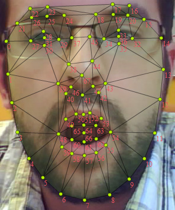

| Package | com.tastenkunst.as3.brf.nxt |
| Class | public final class BRFManager |
| Inheritance | BRFManager |
| Implements | com.tastenkunst.as3.brf.nxt.IBeyondRealityFace |
BRFManager handles the startup of the SDK and all tracking processes. You just need to instantiate it with a BitmapData instance you want to analyse, the region of interest (roi, Rectangle region in that BitmapData) and the stage reference. Please don't call init() directly. (You must not create more than one instance of this class. Please reuse this instance!)
Don't call ANY method before READY was dispatched.
BRFManager.READY will be dispatched, when BRF is ready to use. You can set up BRF for your needs with the methods setPointTrackingVars, setFaceDetectionVars and setFaceTrackingVars. Calling these methods is completely optional, since all BRF components use default values, that do a great job.
There are three different modes that BRF can operate in:
BRFMode.POINT_TRACKING - Tracks points in a video/webcam stream.
BRFMode.FACE_DETECTION - Finds faces in images/webcam streams and marks them with rectangles.
BRFMode.FACE_TRACKING - Detects a single face and analyses it to find detailed face features.
Please see the SDK's examples. Implementations for all tracking modes are included.
Btw: AS3 and Javascript SDK share the exact same API.
Author: Marcel Klammer, Tastenkunst GmbH, 2014
| Property | Defined By | ||
|---|---|---|---|
| candideActionUnitsEnabled : Boolean
Sets/Returns candideActionUnitsEnabled. | BRFManager | ||
| candideEnabled : Boolean
Sets/Returns candideEnabled. | BRFManager | ||
| checkPointsValidBeforeTracking : Boolean
Sets/Returns whether BRF should check for invalid/lost points before an update. | BRFManager | ||
| faceShape : BRFFaceShape [read-only]
Updated when: mode == BRFMode.FACE_TRACKING && (state == BRFState.FACE_TRACKING_START || state == BRFState.FACE_TRACKING). | BRFManager | ||
| lastDetectedFace : Rectangle [read-only]
Updated when: (mode == BRFMode.FACE_DETECTION || mode == BRFMode.FACE_TRACKING) && state == BRFState.FACE_DETECTION. | BRFManager | ||
| lastDetectedFaces : Vector.<Rectangle> [read-only]
Updated when: (mode == BRFMode.FACE_DETECTION || mode == BRFMode.FACE_TRACKING) && state == BRFState.FACE_DETECTION. | BRFManager | ||
| lastState : String [read-only]
lastState is set to the BRFState, that was set before the current update call.
| BRFManager | ||
| mode : String
Sets/Returns the used BRFMode (BRFMode.POINT_TRACKING, BRFMode.FACE_DETECTION, BRFMode.FACE_TRACKING)
| BRFManager | ||
| nextState : String [read-only]
nextState is set to the BRFState, that will be the state of the next update cycle.
| BRFManager | ||
| pointStates : Vector.<Boolean> [read-only]
Updated when: mode == BRFMode.POINT_TRACKING && state == BRFState.POINT_TRACKING. | BRFManager | ||
| pointsToTrack : Vector.<Point> [read-only]
Updated when: mode == BRFMode.POINT_TRACKING && state == BRFState.POINT_TRACKING. | BRFManager | ||
| state : String [read-only]
state is set to the BRFState, that was set in the current update call.
| BRFManager | ||
| Method | Defined By | ||
|---|---|---|---|
BRFManager(src:BitmapData, roi:Rectangle, stage:Stage, params:Object = null)
Initializes the SDK and sets up BRF automatically. | BRFManager | ||
addPointsToTrack(pointsToAdd:Vector.<Point>):void
Adds points that should be tracked. | BRFManager | ||
init(src:BitmapData, roi:Rectangle, stage:Stage, params:Object):void
Don't call this method directly. | BRFManager | ||
reset():void
Resets the tracking process of BRF. | BRFManager | ||
setFaceDetectionROI(x:Number, y:Number, width:Number, height:Number):void
Sets the region of interest (roi) for BRFState.FACE_DETECTION. | BRFManager | ||
setFaceDetectionVars(baseScale:Number = 4.0, scaleIncrement:Number = 0.5, maxScale:Number = 12.0, rectIncrement:Number = 0.04, minRectsToFind:int = 12, detectMultipleFaces:Boolean = false):void
Sets all necessary parameters for mode == BRFMode.FACE_DETECTION.
| BRFManager | ||
setFaceTrackingVars(minShapeDimension:Number = 50, maxShapeDimension:Number = 500, resetMode:int = 1):void
Sets all necessary parameters for mode == BRFMode.FACE_TRACKING.
| BRFManager | ||
setPointTrackingVars(patchSize:int = 21, numLevels:int = 4, numIterations:int = 25, error:Number = 0.0006):void
Sets all necessary parameters for mode == BRFMode.POINT_TRACKING.
| BRFManager | ||
update(bmd:BitmapData):String
Updates the tracking process of BRF. | BRFManager | ||
updateByEyes(bmd:BitmapData, leftEye:Point, rightEye:Point, numUpdates:int = 25):String
(since BRF v3.0.10, reintroduced: was part of BRF v2.3 before)
Single image face tracking was not working as expected. | BRFManager | ||
| Constant | Defined By | ||
|---|---|---|---|
| READY : String = ready [static]
Once BRF is ready to start tracking, BRFManager.READY is dispatched. | BRFManager | ||
| candideActionUnitsEnabled | property |
candideActionUnitsEnabled:BooleanSets/Returns candideActionUnitsEnabled. Only enable the Candide 3 model update and ActionUnit update, when you need it (eg. for 3D engine updates).
public function get candideActionUnitsEnabled():Boolean public function set candideActionUnitsEnabled(value:Boolean):void| candideEnabled | property |
candideEnabled:BooleanSets/Returns candideEnabled. Only enable the Candide 3 model update, when you need it (eg. for 3D engine updates).
public function get candideEnabled():Boolean public function set candideEnabled(value:Boolean):void| checkPointsValidBeforeTracking | property |
checkPointsValidBeforeTracking:BooleanSets/Returns whether BRF should check for invalid/lost points before an update. If true, invalid points will be removed from pointsToTrack.
default: true
public function get checkPointsValidBeforeTracking():Boolean public function set checkPointsValidBeforeTracking(value:Boolean):void| faceShape | property |
faceShape:BRFFaceShape [read-only]
Updated when: mode == BRFMode.FACE_TRACKING && (state == BRFState.FACE_TRACKING_START || state == BRFState.FACE_TRACKING). Includes 68 points/vertices of the face shape, also its triangles and its bounds.
ExampleWebcamFaceEstimation_Output.jpg shows all indices of the points.

If candideEnabled == true it will also update candideVertices, scale, translationX, translationY, rotationX, rotationY and rotationZ. These values are used to update 3D engines. This Candide 3 implementation also includes 6 ActionUnits (activate them by setting candideActionUnitsEnabled == true).
public function get faceShape():BRFFaceShape| lastDetectedFace | property |
lastDetectedFace:Rectangle [read-only]
Updated when: (mode == BRFMode.FACE_DETECTION || mode == BRFMode.FACE_TRACKING) && state == BRFState.FACE_DETECTION. If no result is avalable, x, y, width and height are set to 0. Otherwise it's filled with the found face region.
public function get lastDetectedFace():Rectangle| lastDetectedFaces | property |
lastDetectedFaces:Vector.<Rectangle> [read-only]
Updated when: (mode == BRFMode.FACE_DETECTION || mode == BRFMode.FACE_TRACKING) && state == BRFState.FACE_DETECTION. Includes every single found face region of that update cycle.
public function get lastDetectedFaces():Vector.<Rectangle>| lastState | property |
lastState:String [read-only]
lastState is set to the BRFState, that was set before the current update call.
public function get lastState():StringSee also
| mode | property |
mode:StringSets/Returns the used BRFMode (BRFMode.POINT_TRACKING, BRFMode.FACE_DETECTION, BRFMode.FACE_TRACKING)
public function get mode():String public function set mode(value:String):voidSee also
| nextState | property |
nextState:String [read-only]
nextState is set to the BRFState, that will be the state of the next update cycle.
public function get nextState():StringSee also
| pointStates | property |
pointStates:Vector.<Boolean> [read-only]
Updated when: mode == BRFMode.POINT_TRACKING && state == BRFState.POINT_TRACKING. Includes all states for pointsToTrack.
If true: point is valid. If false: point is not valid (and will be removed from pointsToTrack automatically if checkPointsValidBeforeTracking == true)
public function get pointStates():Vector.<Boolean>| pointsToTrack | property |
pointsToTrack:Vector.<Point> [read-only]
Updated when: mode == BRFMode.POINT_TRACKING && state == BRFState.POINT_TRACKING. Includes all tracked points, whether valid or invalid (get their states from pointStates)
public function get pointsToTrack():Vector.<Point>| state | property |
state:String [read-only]
state is set to the BRFState, that was set in the current update call.
public function get state():StringSee also
| BRFManager | () | Constructor |
public function BRFManager(src:BitmapData, roi:Rectangle, stage:Stage, params:Object = null)
Initializes the SDK and sets up BRF automatically. Once BRF is ready to start tracking, BRFManager.READY is dispatched. Just listen to that event.
For questions about the implementation, please refer to the examples, that are included in the SDK download.
Parameterssrc:BitmapData — - mandatory, the BitmapData BRF is working on (default size should be 640x480)
| |
roi:Rectangle — - mandatory, define the region of interest in your src BitmapData, that should be analysed (should definitly NOT exceed 800x600, default should be 640x480)
| |
stage:Stage — - mandatory, put your stage referance in here
| |
params:Object (default = null) |
| addPointsToTrack | () | method |
public final function addPointsToTrack(pointsToAdd:Vector.<Point>):voidAdds points that should be tracked. Please call this method right before _brfManager.update();
Parameters
pointsToAdd:Vector.<Point> |
| init | () | method |
public final function init(src:BitmapData, roi:Rectangle, stage:Stage, params:Object):voidDon't call this method directly. This is done automatically within the initialization process. Listen to the BRFManager.READY event instead.
Parameters
src:BitmapData | |
roi:Rectangle | |
stage:Stage | |
params:Object |
| reset | () | method |
public final function reset():void
Resets the tracking process of BRF. Usually when you want to pause BRF tracking or restart with FACE_DETECTION. Also removes all pointsToTrack, when mode == BRFMode.POINT_TRACKING.
| setFaceDetectionROI | () | method |
public final function setFaceDetectionROI(x:Number, y:Number, width:Number, height:Number):void
Sets the region of interest (roi) for BRFState.FACE_DETECTION. In most cases you can set a smaller roi for face detection in the center of the source image. This will result in better performance and a smoother tracking start, because the tracking start in the image center.
Parameters
x:Number | |
y:Number | |
width:Number | |
height:Number |
| setFaceDetectionVars | () | method |
public final function setFaceDetectionVars(baseScale:Number = 4.0, scaleIncrement:Number = 0.5, maxScale:Number = 12.0, rectIncrement:Number = 0.04, minRectsToFind:int = 12, detectMultipleFaces:Boolean = false):void
Sets all necessary parameters for mode == BRFMode.FACE_DETECTION.
Parameters
baseScale:Number (default = 4.0) | |
scaleIncrement:Number (default = 0.5) | |
maxScale:Number (default = 12.0) | |
rectIncrement:Number (default = 0.04) | |
minRectsToFind:int (default = 12) | |
detectMultipleFaces:Boolean (default = false) |
| setFaceTrackingVars | () | method |
public final function setFaceTrackingVars(minShapeDimension:Number = 50, maxShapeDimension:Number = 500, resetMode:int = 1):void
Sets all necessary parameters for mode == BRFMode.FACE_TRACKING.
Parameters
minShapeDimension:Number (default = 50) | |
maxShapeDimension:Number (default = 500) | |
resetMode:int (default = 1) |
| setPointTrackingVars | () | method |
public final function setPointTrackingVars(patchSize:int = 21, numLevels:int = 4, numIterations:int = 25, error:Number = 0.0006):void
Sets all necessary parameters for mode == BRFMode.POINT_TRACKING.
Parameters
patchSize:int (default = 21) | |
numLevels:int (default = 4) | |
numIterations:int (default = 25) | |
error:Number (default = 0.0006) |
| update | () | method |
public final function update(bmd:BitmapData):String
Updates the tracking process of BRF. Usually on Event.ENTER_FRAME.
Parameters
bmd:BitmapData — BitmapData instance to work on, must be the same as the one in the constructor (only needed for ANE/JS update).
|
String — current BRFState (same as BRFManager.state)
|
| updateByEyes | () | method |
public final function updateByEyes(bmd:BitmapData, leftEye:Point, rightEye:Point, numUpdates:int = 25):String
(since BRF v3.0.10, reintroduced: was part of BRF v2.3 before)
Single image face tracking was not working as expected. There was a 50% chance to get a good result, but it was more like a lucky shot.
This method lets you specify the left and right eye position. It skips the face detection part and uses the eye positions to align the face tracking shape. This way there is a much better chance to get a good result out of a single image. (Works only with mode == BRFMode.FACE_TRACKING.)
Parameters
bmd:BitmapData — BitmapData instance to work on, must be the same as the one in the constructor (only needed for ANE/JS update).
| |
leftEye:Point — the left eye position (on the BitmapData, that BRF will work on!).
| |
rightEye:Point — the right eye position (on the BitmapData, that BRF will work on!).
| |
numUpdates:int (default = 25) |
String — current BRFState (same as BRFManager.state)
|
| READY | Constant |
public static const READY:String = readyOnce BRF is ready to start tracking, BRFManager.READY is dispatched.